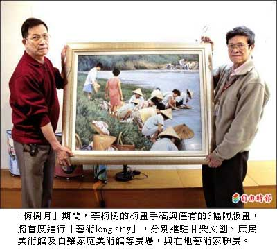

喜上「梅」梢 李梅樹大師與藝術家聯展
謝佳君｜自由時報／新北都會生活∣2012年3月22日
三月是梅子成熟的季節，也是已故知名藝術家李梅樹的誕辰月，新北市三峽區李梅樹紀念館與多位在地藝術家，共同舉辦「梅樹月」活動，自三月廿三日起至四月廿九日展開一系列活動，除紀念李梅樹，透過李梅樹紀念館的活化經營，同時帶動三峽整體文化生活圈。
李梅樹紀念館長李景光說，這次紀念館首度開放三峽跨領域藝術家的作品進駐，包括王元祥、吳玟瑭、李淑英、張又然、曾文賢、鄭蕙香及賴威佑等，與李梅樹的畫作一同展出。
「除了其他藝術家走進來，李梅樹紀念館也要走出去。」李景光說。這次李梅樹的梅畫手稿與僅有的三幅陶版畫，將首度進行「藝術long stay」，分別進駐甘樂文創、庶民美術館及白雞家庭美術館等展場，與在地藝術家聯展。
三月廿四日開幕當天上午，李梅樹紀念館將有「植梅樹」活動，下午在白雞家庭美術館舉辦「老梅醋品醋會」，品嘗白雞山上唐婆親釀的老梅醋。兩場皆有封街及露天演唱會，並分別準備五十株梅樹苗分贈民眾。
李景光說，「梅樹月」期間，除週一休館，每天都有藝術家駐館導覽，假日則有表演活動及參展藝術家所舉辦的藝文講座、DIY教學等。另外，民眾可預約報名參加每週六、日上午十點的三峽祖師廟深度解說導覽活動。
為鼓勵民眾參加，「梅樹月」期間，所有展場皆開放免費參觀，還有「梅花印‧集章趣」收集紀念戳章活動，集滿李梅樹紀念館、甘樂文創、樹民美術館及白雞家庭美術館的專屬「梅花印」紀念戳章，即可獲李梅樹相關紀念品。
主辦單位表示，歡迎民眾一邊用「梅樹杯」品飲陳年「梅醋」，一邊欣賞李梅樹「喜上梅梢」畫稿與祖師廟梅畫雕刻。除了發揚李梅樹愛鄉愛土、藝術根植故鄉土地的精神，盼藉廣植梅樹，營造三峽成為「梅樹城」及「梅」好藝術文化城鎮。活動相關訊息可上李梅樹紀念館官方網站查詢，或電洽：02-2673-2333、2674-3332。